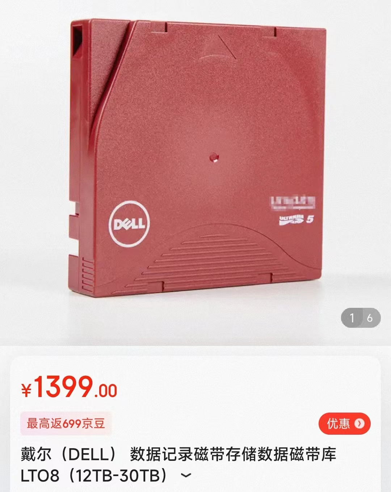
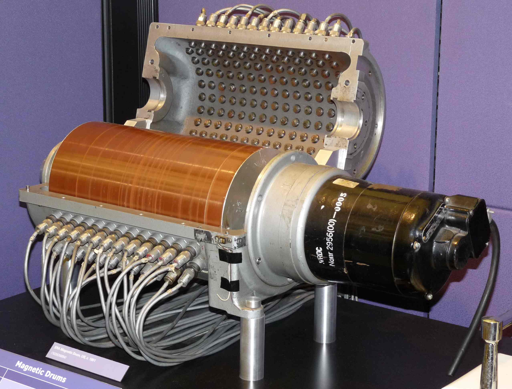
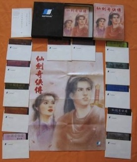

“持久化” 可能没有想象的那么困难
我们只需要一个 “能反复改写的状态”
- 当然，要能寻址 + 用电路改写

磁带 (Magnetic Tape, 1928)

1D 存储设备
- 把 Bits “卷起来”
- 纸带上均匀粘上铁磁性颗粒
- 只需要一个机械部件 (转动) 定位
- 读取：放大感应电流
- 写入：电磁铁磁化磁针
磁带：作为存储设备的分析

分析
- 价格
非常低 - 都是廉价的材料
- 容量
非常高
- 读写速度
- 顺序读取：
勉强 - 需要等待定位 - 随机读取：
几乎完全不行
- 顺序读取：
- 可靠性
存在机械部件 、需要保存的环境苛刻
今天的应用场景
- 冷数据的存档和备份
磁鼓 (Magnetic Drum, 1932)
1D → 1.5D (1D x n)
- 用旋转的二维平面存储数据
- 无法内卷，容量变小
- 读写延迟不会超过旋转周期
- 随机读写速度大幅提升

磁盘 (Hard Disk, 1956)
1D → 2.5D (2D x n)
- 在二维平面上放置许多磁带 (内卷)

磁盘 (cont'd)
克服许多工程挑战

磁盘：作为存储设备的分析
分析
- 价格
低 - 密度越高，成本越低
- 容量
高 (2.5D) - 平面上可以有数万个磁道
- 读写速度
- 顺序读取：
较高 - 随机读取：
勉强
- 顺序读取：
- 可靠性
存在机械部件，磁头划伤盘片导致数据损坏
今天的应用场景
- 计算机系统的主力数据存储 (
海量数据：便宜才是王道)
磁盘：性能调优
为了读/写一个扇区
- 读写头需要到对应的磁道
- 7200rpm → 120rps → “寻道” 时间 8.3ms
- 转轴将盘片旋转到读写头的位置
- 读写头移动时间通常也需要几个 ms
通过缓存/调度等缓解
- 例如著名的 “电梯” 调度算法
- 现代 HDD 都有很好的 firmware 管理磁盘 I/O 调度
/sys/block/[dev]/queue[mq-deadline] none(读优先；但写也不至于饿死)
软盘 (Floppy Disk, 1971)

把读写头和盘片分开——实现数据移动
- 计算机上的软盘驱动器 (drive) + 可移动的盘片
- 8" (1971), 5.25" (1975), 3.5" (1981)
- 最初的软盘成本很低，就是个纸壳子
- 3.5 英寸软盘为了提高可靠性，已经是 “硬” 的了
- 8" (1971), 5.25" (1975), 3.5" (1981)

软盘：作为存储设备的分析
分析
- 价格
低 - 塑料、盘片和一些小材料
- 容量
低 (暴露的存储介质，密度受限)
- 读写速度
- 顺序/随机读取：
低
- 顺序/随机读取：
- 可靠性
低 (暴露的存储介质)
今天的应用场景
- 躺在博物馆供人参观
- 彻底被 USB Flash Disk 杀死